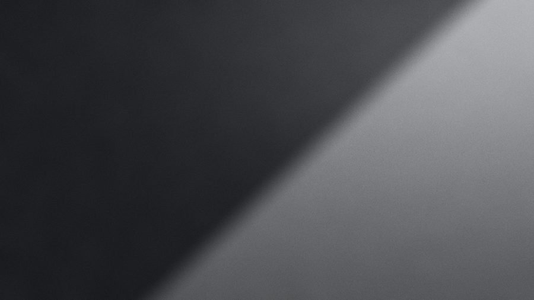

30.2672° N
97.7431° W
JPMedia
Film · Production · PhotographyAustin, Texas


Tap to skip
Selected work
Index · 08 entries · Tap a row
-

- Title
- Working Title I
- Format
- Short film · Narrative
- Year
- 2025
- Roles
- Direction, camera, edit
- Frame
- 16:9 · Select pending
- Slate
- A001 · SC 01 · TK 01
-

- Title
- Live, Austin
- Format
- Live performance film
- Year
- 2025
- Roles
- Camera, edit
- Frame
- 16:9 · Select pending
- Slate
- A002 · SC 01 · TK 01
-

- Title
- Soundcheck
- Format
- Music video
- Year
- 2024
- Roles
- Direction, camera
- Frame
- 9:16 master · 16:9 crop shown
- Slate
- A003 · SC 01 · TK 01
-

- Title
- Tour Diary
- Format
- On the road with a touring band
- Year
- 2024
- Roles
- Camera, photography
- Frame
- 16:9 · Select pending
- Slate
- A004 · SC 01 · TK 01
-

- Title
- Portraits, Vol. I
- Format
- Portrait series · Stills
- Year
- 2025
- Roles
- Photography
- Frame
- 2:3 master · 16:9 crop shown
- Slate
- A005 · Roll 01
-

- Title
- Hill Country
- Format
- Landscape series · Texas
- Year
- 2024
- Roles
- Photography
- Frame
- 2.39:1 master · 16:9 crop shown
- Slate
- A006 · Roll 01
-

- Title
- Black & White
- Format
- Monochrome series · Stills
- Year
- 2023
- Roles
- Photography
- Frame
- 3:2 master · 16:9 crop shown
- Slate
- A007 · Roll 01
-

- Title
- Production Stills
- Format
- Behind the scenes · Stills
- Year
- 2025
- Roles
- Photography
- Frame
- 4:5 master · 16:9 crop shown
- Slate
- A008 · Roll 01
Capabilities
Six disciplines · One unit
- 01
Direction
Treatments, shot lists and performance direction for narrative and music. The idea is decided before the camera arrives.
- 02
Production
Crews, locations, schedules and permits across Texas and on the road. Small units that move fast and stay quiet.
- 03
Cinematography
Handheld or locked off, available light or a full package. Camera choices made for the cut, not for the gear list.
- 04
Photography
Portraits, landscape and live work, often shot on the same days as the film. One eye across motion and stills.
- 05
Edit & Colour
Picture edit, sound pass and grade handled in-house. The finish matches the stills from the same shoot.
- 06
Stills on Set
Unit photography during production: key frames, press stills and behind-the-scenes documentation from the same crew.
Commercial discipline.
Documentary instinct.
Direction, production and camera for agencies, artists and brands.
Credits
Project · Role · Year
- ProjectRoleYear
- Working Title IDirection2025
- Working Title ICamera2025
- Working Title IEdit2025
- Live, AustinCamera2025
- Live, AustinEdit2025
- SoundcheckDirection2024
- SoundcheckCamera2024
- ProjectRoleYear
- Tour DiaryCamera2024
- Tour DiaryPhotography2024
- Portraits, Vol. IPhotography2025
- Hill CountryPhotography2024
- Black & WhitePhotography2023
- Production StillsPhotography2025
- Full credit list on request.
The House
JP Media · Est. Austin, Texas
JP Media is the production studio of JP Silva, filmmaker, producer and photographer in Austin, Texas. The work runs from narrative film and music video to live performance, touring documentation and portraiture.
Born in Bauru, São Paulo, he moved to the United States as a teenager. What he looks for has not changed since: the moment where the feeling is real, on a stage, on a set, or in the quiet between takes.
- Based
- Austin, Texas
- Origin
- Bauru, São Paulo, Brazil
- Working
- Texas, the US and on location
- Studio
- JP Media
- Position
- 30.2672° N, 97.7431° W
Contact
New slate · Private preview
New project